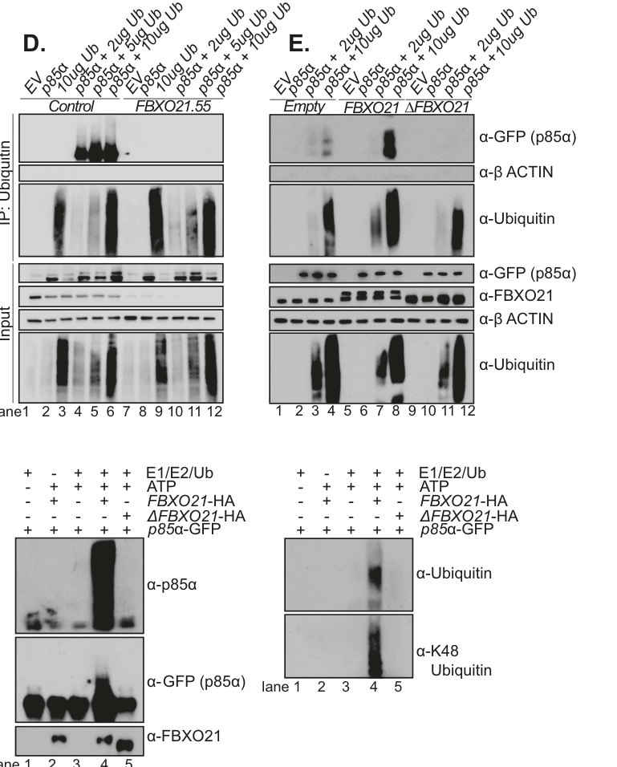

FBXO21 (FBX21, KIAA0875; also reported as SIP/FBXO3B) is a 628-residue F-box protein that serves as the substrate-recognition subunit of a multi-subunit SCF (SKP1-CUL1-F-box protein)-type E3 ubiquitin ligase complex. Through its N-terminal F-box domain (residues 28-84) it binds SKP1, coupling to CUL1 and the catalytic RING subunit RBX1, while its central and C-terminal regions provide substrate specificity. The best-characterized substrate is EID1 (EP300-interacting inhibitor of differentiation 1): FBXO21 binds the C-terminal region of EID1 and SCF(FBXO21) directly ubiquitylates EID1 to drive its proteasomal degradation predominantly in the cytoplasm (EID1 accumulates in both cytoplasm and nucleus upon FBXO21 loss), thereby influencing EID1-dependent transcriptional repression; a peptidic modular degron in EID1 is necessary and sufficient for SCF(FBXO21)-dependent polyubiquitylation. FBXO21 operates in two mechanistic modes. In the canonical proteolytic mode it directs K48-type proteasomal degradation of substrates including EID1, the PI3K regulatory subunit p85alpha (PIK3R1; degradation in acute myeloid leukemia shapes PI3K/AKT versus ERK signaling and AML cell survival/differentiation), and the multidrug-resistance transporter ABCB1/P-glycoprotein (whose turnover is blocked by Ser291-phosphorylated CD44). In a non-proteolytic signaling mode, SCF(FBXO21) catalyzes Lys29-linked ubiquitination of the kinase ASK1 (MAP3K5) that promotes ASK1 activation rather than degradation, driving ASK1-JNK/p38 and IRF3-dependent antiviral innate immune signaling and type I interferon (IFN-beta) and IL-6 induction after viral or nucleic-acid challenge. As an SCF adaptor, FBXO21 thus acts in the ubiquitin-proteasome system to mediate ubiquitin-dependent, SCF-type protein catabolism and, via atypical chain linkages, ubiquitin-dependent signal transduction. It is broadly expressed (tissue-enhanced in fallopian tube).
| GO Term | Evidence | Action | Reason |
|---|---|---|---|
|
GO:0003677
DNA binding
|
IEA
GO_REF:0000002 |
REMOVE |
Summary: InterPro domain-based electronic assignment of DNA binding, propagated from a hemimethylated-DNA-binding-like (YccV-like) domain match; FBXO21 is an SCF substrate adaptor with no established DNA-binding function.
Reason: This is an over-propagated IEA. FBXO21's UniProt-curated function is purely as the substrate-recognition subunit of an SCF E3 ubiquitin ligase, binding SKP1/CUL1 and substrates (EID1). The DNA binding term derives from an InterPro signature (IPR011722 hemimethylated-DNA-binding/YccV-like, TIGR02097 yccV) detected in the protein's C-terminal region; there is no experimental or curated evidence that FBXO21 binds DNA sequence-specifically or functions in DNA metabolism. The annotation conflates a remote domain-fold match with a molecular function and is biologically misleading for a cytoplasmic/nuclear ubiquitin-ligase adaptor.
Supporting Evidence:
file:human/FBXO21/FBXO21-uniprot.txt
Substrate-recognition component of the SCF (SKP1-CUL1-F-box protein)-type E3 ubiquitin ligase complex.
|
|
GO:0005515
protein binding
|
IPI
PMID:26085330 FBXO21 mediates the ubiquitylation and proteasomal degradati... |
KEEP AS NON CORE |
Summary: IPI interaction underpinning the functionally meaningful FBXO21-EID1 substrate relationship (FBXO21 binds the C-terminal region of EID1 and targets it for ubiquitylation). The bare protein binding term is uninformative, but this records a real substrate interaction.
Reason: Records the substrate-recognition interaction with EID1, which is biologically central, but bare protein binding (GO:0005515) is uninformative per curation guidelines; the substrate relationship is better captured by the SCF/catabolism process annotations and core functions.
Supporting Evidence:
PMID:26085330
The central and COOH-terminal portion of FBXO21 was found to interact with the COOH-terminal region of EID1 in transfected cells.
|
|
GO:0005515
protein binding
|
IPI
PMID:27705803 A High-Density Map for Navigating the Human Polycomb Complex... |
KEEP AS NON CORE |
Summary: Interaction captured in a high-throughput affinity-purification map of the human Polycomb complexome. Bare protein binding is uninformative.
Reason: High-throughput AP-MS interaction; bare protein binding (GO:0005515) is uninformative and not a core function.
|
|
GO:0005515
protein binding
|
IPI
PMID:33961781 Dual proteome-scale networks reveal cell-specific remodeling... |
KEEP AS NON CORE |
Summary: Interaction captured in the BioPlex proteome-scale AP-MS interactome (cell-specific remodeling study). Bare protein binding is uninformative.
Reason: High-throughput AP-MS interactome; bare protein binding (GO:0005515) is uninformative and not a core function.
Supporting Evidence:
PMID:33961781
BioPlex 3.0, results from affinity purification of 10,128 human proteins-half the proteome-in 293T cells and includes 118,162 interactions among 14,586 proteins.
|
|
GO:0005515
protein binding
|
IPI
PMID:40205054 Multimodal cell maps as a foundation for structural and func... |
KEEP AS NON CORE |
Summary: Interaction captured in a multimodal AP-MS/immunofluorescence cell map of U2OS cells. Bare protein binding is uninformative.
Reason: High-throughput AP-MS interactome; bare protein binding (GO:0005515) is uninformative and not a core function.
Supporting Evidence:
PMID:40205054
through joint measurement of biophysical interactions and immunofluorescence images for over 5,100 proteins in U2OS osteosarcoma cells
|
|
GO:0019005
SCF ubiquitin ligase complex
|
NAS
PMID:34445249 The SCF Complex Is Essential to Maintain Genome and Chromoso... |
ACCEPT |
Summary: FBXO21 is the variable F-box substrate-recognition subunit of an SCF (SKP1-CUL1-F-box) E3 ubiquitin ligase complex, binding SKP1 and CUL1. This is a core localization/complex-membership annotation.
Reason: Directly supported by UniProt curation (interacts with SKP1 and CUL1) and by a dedicated ComplexPortal entry (CPX-7930, SCF E3 ubiquitin ligase complex, FBXO21 variant). Core to FBXO21's molecular role.
Supporting Evidence:
file:human/FBXO21/FBXO21-uniprot.txt
Directly interacts with SKP1 and CUL1.
|
|
GO:0031146
SCF-dependent proteasomal ubiquitin-dependent protein catabolic process
|
NAS
PMID:34445249 The SCF Complex Is Essential to Maintain Genome and Chromoso... |
ACCEPT |
Summary: As the substrate-recognition subunit of an SCF complex, FBXO21 drives SCF-dependent, proteasome-mediated degradation of its substrates (demonstrated for EID1). This is the core biological process.
Reason: Core biological process. SCF complexes target substrates with poly-ubiquitin chains for proteasomal degradation (PMID:34445249), and FBXO21 was shown to drive proteasomal degradation of EID1 (PMID:26085330). Specific and well-supported.
Supporting Evidence:
PMID:34445249
encompasses a group of 69 SCF E3 ubiquitin ligase complexes that primarily modify protein substrates with poly-ubiquitin chains to target them for proteasomal degradation
|
|
GO:0005829
cytosol
|
TAS
Reactome:R-HSA-8952618 |
KEEP AS NON CORE |
Summary: Reactome TAS localization to cytosol assigned via a generic CRL1 (cullin-RING ligase) neddylation/cycle reaction. Correct compartment but generic and inherited from pathway context.
Reason: Cytosolic localization is consistent with FBXO21 acting in cytoplasmic SCF complexes (and EID1 is degraded in cytoplasm and nucleus), but this annotation is a generic CRL-cycle pathway assignment, redundant across many reactions; non-core.
|
|
GO:0005829
cytosol
|
TAS
Reactome:R-HSA-8952620 |
KEEP AS NON CORE |
Summary: Reactome TAS localization to cytosol from a generic CRL1 neddylation/cycle reaction.
Reason: Generic CRL-cycle localization; correct but redundant and non-core.
|
|
GO:0005829
cytosol
|
TAS
Reactome:R-HSA-8955241 |
KEEP AS NON CORE |
Summary: Reactome TAS localization to cytosol from a generic cytosolic CRL E3 ligase (CAND1-binding) reaction.
Reason: Generic CRL-cycle localization; correct but redundant and non-core.
|
|
GO:0005829
cytosol
|
TAS
Reactome:R-HSA-8955289 |
KEEP AS NON CORE |
Summary: Reactome TAS localization to cytosol from a generic cytosolic CRL E3 ligase (COMMD/CAND1) reaction.
Reason: Generic CRL-cycle localization; correct but redundant and non-core.
|
|
GO:0005829
cytosol
|
TAS
Reactome:R-HSA-8956040 |
KEEP AS NON CORE |
Summary: Reactome TAS localization to cytosol from the COP9-signalosome deneddylation reaction on cytosolic CRL complexes.
Reason: Generic CRL-cycle localization; correct but redundant and non-core.
|
|
GO:0005829
cytosol
|
TAS
Reactome:R-HSA-8956200 |
KEEP AS NON CORE |
Summary: Reactome TAS localization to cytosol from a generic CRL1 (DCUN1D3-binding) reaction.
Reason: Generic CRL-cycle localization; correct but redundant and non-core.
|
|
GO:0005829
cytosol
|
TAS
Reactome:R-HSA-983140 |
KEEP AS NON CORE |
Summary: Reactome TAS localization to cytosol from a generic ubiquitin-transfer (E2-to-substrate) reaction in the antigen-processing/proteasome pathway.
Reason: Generic ubiquitination-cycle localization; correct but redundant and non-core.
|
|
GO:0005829
cytosol
|
TAS
Reactome:R-HSA-983147 |
KEEP AS NON CORE |
Summary: Reactome TAS localization to cytosol from a generic reaction (release of E3 from polyubiquitinated substrate).
Reason: Generic ubiquitination-cycle localization; correct but redundant and non-core.
|
|
GO:0005829
cytosol
|
TAS
Reactome:R-HSA-983156 |
KEEP AS NON CORE |
Summary: Reactome TAS localization to cytosol from a generic polyubiquitination-of-substrate reaction.
Reason: Generic ubiquitination-cycle localization; correct but redundant and non-core.
|
|
GO:0005829
cytosol
|
TAS
Reactome:R-HSA-983157 |
KEEP AS NON CORE |
Summary: Reactome TAS localization to cytosol from a generic reaction (interaction of E3 with substrate and E2-Ub complex).
Reason: Generic ubiquitination-cycle localization; correct but redundant and non-core.
|
|
GO:0000151
ubiquitin ligase complex
|
NAS
PMID:10531035 Identification of a family of human F-box proteins. |
KEEP AS NON CORE |
Summary: FBXO21 is a subunit of a ubiquitin ligase (SCF) complex, the general parent of the more specific SCF ubiquitin ligase complex annotation. Supported by the founding F-box protein family paper.
Reason: Correct but generic; the more specific GO:0019005 (SCF ubiquitin ligase complex) better captures FBXO21's complex membership. F-box proteins are one of the four subunits of SCF ubiquitin ligases.
Supporting Evidence:
PMID:10531035
F-box proteins are one of the four subunits of ubiquitin protein ligases called SCFs.
|
|
GO:0004842
ubiquitin-protein transferase activity
|
NAS
PMID:10531035 Identification of a family of human F-box proteins. |
MODIFY |
Summary: NAS assignment of ubiquitin-protein transferase activity from the founding F-box family paper. However, within the SCF complex the catalytic ubiquitin-transfer activity resides in the RING subunit (RBX1); the F-box protein FBXO21 functions as the substrate-recruiting adaptor, not the catalytic transferase.
Reason: F-box proteins do not themselves catalyse ubiquitin transfer; they are the substrate-recognition adaptors that recruit substrates to the SCF, whose catalytic activity is provided by the RING subunit RBX1 (with the E2). The NAS source (PMID:10531035) describes SCF complexes (not FBXO21 itself) as ubiquitin ligases. The more accurate molecular function for an F-box protein is ubiquitin-like ligase-substrate adaptor activity (GO:1990756).
Proposed replacements:
ubiquitin-like ligase-substrate adaptor activity
Supporting Evidence:
file:human/FBXO21/FBXO21-uniprot.txt
Substrate-recognition component of the SCF (SKP1-CUL1-F-box protein)-type E3 ubiquitin ligase complex.
|
|
GO:0006511
ubiquitin-dependent protein catabolic process
|
NAS
PMID:10531035 Identification of a family of human F-box proteins. |
KEEP AS NON CORE |
Summary: FBXO21, as an SCF substrate adaptor, mediates ubiquitin-dependent protein catabolism (directly demonstrated for EID1). General parent of the SCF-dependent catabolism term.
Reason: Correct and supported (FBXO21 drives ubiquitin-dependent proteasomal degradation of EID1), but the more specific GO:0031146 (SCF-dependent proteasomal ubiquitin-dependent protein catabolic process) better captures the role; retained as non-core to avoid redundancy.
Supporting Evidence:
PMID:26085330
FBXO21 mediates the ubiquitylation and proteasomal degradation of EID1.
|
Q: Beyond EID1, what is the full substrate repertoire of SCF(FBXO21), and which substrate-recognition surface (central vs C-terminal region) engages each substrate?
Q: Is the reported antiviral/innate-immune signalling role of FBXO21 dependent on its SCF ligase activity and substrate ubiquitylation, or does it act through a ligase-independent mechanism?
Q: What governs the subcellular partitioning of SCF(FBXO21) activity between cytoplasm and nucleus, given that EID1 accumulates in both compartments upon FBXO21 loss?
Experiment: Perform DiPIUS or quantitative ubiquitinome/proteome profiling in FBXO21-knockout versus wild-type cells (with and without proteasome inhibition) to define the endogenous SCF(FBXO21) substrate repertoire.
Experiment: Reconstitute SCF(FBXO21)-mediated ubiquitylation of EID1 in vitro with purified SKP1, CUL1, RBX1, an E2, and an F-box-domain mutant of FBXO21 to confirm that adaptor (SKP1-binding) function is required and to map EID1 ubiquitylation sites and chain linkage.
Experiment: Test whether FBXO21's reported antiviral signalling function requires SCF assembly by comparing wild-type FBXO21 with an F-box-deletion (SKP1-binding-defective) mutant in interferon-pathway reporter and viral-challenge assays.
The research report should be a detailed narrative explaining the function, biological processes, and localization of the gene product. Citations should be given for all claims.
You should prioritize authoritative reviews and primary scientific literature when conducting research. You can supplement
this with annotations you find in gene/protein databases, but these can be outdated or inaccurate.
We are specifically interested in the primary function of the gene - for enzymes, what reaction is catalyzed, and what is the substrate specificity? For transporters, what is the substrate? For structural proteins or adapters, what is the broader structural role? For signaling molecules, what is the role in the pathway.
We are interested in where in or outside the cell the gene product carries out its function.
We are also interested in the signaling or biochemical pathways in which the gene functions. We are less interested in broad pleiotropic effects, except where these elucidate the precise role.
Include evidence where possible. We are interested in both experimental evidence as well as inference from structure, evolution, or bioinformatic analysis. Precise studies should be prioritized over high-throughput, where available.
The research target is human FBXO21 (UniProt O94952; gene FBXO21, synonyms FBX21, KIAA0875), an F-box only protein that functions as a substrate-recognition subunit of an SCF (SKP1–CUL1–RBX1) Cullin-RING E3 ubiquitin ligase complex. This identity is consistent across primary literature describing SCF^FBXO21 and its validated substrates (EID1, ASK1, p85α/PIK3R1, and ABCB1/P-gp). (watanabe2015fbxo21mediatesthe pages 2-3, watanabe2015fbxo21mediatesthe pages 1-2, yu2016lys29linkageofask1 pages 7-9, zhang2015peptidicdegronin pages 1-2, dobish2023fbxo21mediateddegradation pages 8-9)
F-box proteins are best understood as substrate receptors for SCF E3 ligases: they bind SKP1 through the F-box and recruit specific substrates via other domains/regions, enabling the CUL1–RBX1 catalytic module to build ubiquitin chains on the substrate. For FBXO21, co-precipitation of SKP1 and CUL1 with FBXO21 supports its role as an SCF substrate receptor. (watanabe2015fbxo21mediatesthe pages 2-3, yu2016lys29linkageofask1 pages 7-9)
FBXO21 is notable because its experimentally validated biology spans both:
1) Proteolytic ubiquitination → proteasomal degradation (canonical SCF function), as shown for EID1, p85α (PIK3R1), and ABCB1/P-gp. (watanabe2015fbxo21mediatesthe pages 1-2, dobish2023fbxo21mediateddegradation pages 8-9, ravindranath2015cd44promotesmultidrug pages 7-9)
2) Non-proteolytic ubiquitination → signaling activation, as shown for ASK1, where FBXO21 catalyzes Lys29-linked ubiquitination that promotes ASK1 phosphorylation/activation rather than substrate destruction. (yu2016lys29linkageofask1 pages 14-15, yu2016lys29linkageofask1 pages 7-9)
This duality is important for functional annotation: FBXO21 is not only a “degrader” but can also operate as a signaling regulator through atypical ubiquitin linkages. (yu2016lys29linkageofask1 pages 14-15)
Two independent 2015 studies establish EID1 (EP300-interacting inhibitor of differentiation 1) as a direct FBXO21 substrate.
Substrate identification and validation. Watanabe et al. used differential binding proteomics (DiPIUS) comparing WT FBXO21 to a binding mutant to identify candidate substrates, then validated an FBXO21–EID1 interaction and concluded SCF^FBXO21 ubiquitylates EID1, promoting proteasomal degradation. (Publication date: Aug 2015; https://doi.org/10.1111/gtc.12260) (watanabe2015fbxo21mediatesthe pages 2-3, watanabe2015fbxo21mediatesthe pages 1-2)
Degron concept and biological context. Zhang et al. mapped a peptidic modular degron in EID1 that is necessary and sufficient for SCF^FBXO21-dependent polyubiquitylation and proteasomal degradation in vitro and in vivo. (Publication date: Dec 2015; https://doi.org/10.1073/pnas.1522006112) (zhang2015peptidicdegronin pages 1-2)
Localization context. In Watanabe et al., EID1 degradation by SCF^FBXO21 is reported as occurring predominantly in the cytoplasm, and FBXO21 disruption stabilized EID1 with accumulation in cytoplasm and nucleus (supporting that proteolysis is a major control point for EID1 abundance). (watanabe2015fbxo21mediatesthe pages 1-2)
Functional interpretation. EID1 is a transcriptional regulator (interacting with EP300); thus, FBXO21 likely regulates transcriptional programs indirectly by controlling EID1 protein abundance (rather than through an enzymatic reaction of its own). (watanabe2015fbxo21mediatesthe pages 1-2, zhang2015peptidicdegronin pages 1-2)
Yu et al. show FBXO21 is required for antiviral innate response by catalyzing a non-canonical ubiquitination signal on ASK1 (MAP3K5).
Complex formation and substrate binding. FBXO21 forms an SCF complex (co-IP with SKP1/CUL1/RBX1; F-box required). ASK1 was identified as an FBXO21 interactor by endogenous IP + LC-MS and validated by co-IP and GST pull-down. (yu2016lys29linkageofask1 pages 7-9)
Ubiquitin linkage specificity. SCF^FBXO21 mediates Lys29-linked ubiquitination of ASK1, demonstrated using ubiquitin mutants (K29-only ubiquitin), and this modification is non-proteolytic (ASK1 degradation not affected). (yu2016lys29linkageofask1 pages 14-15, yu2016lys29linkageofask1 pages 7-9)
Pathway consequence. FBXO21 deficiency impaired virus-induced signaling (reduced JNK/p38 and IRF3 activation; reduced nuclear c-Fos/IRF3) and reduced IL-6 and IFNβ induction after LPS, nucleic acid agonists, and VSV/HSV-1 infection, linking FBXO21→ASK1 ubiquitination to ASK1–JNK/p38 antiviral signaling and type I interferon responses. (yu2016lys29linkageofask1 pages 14-15, yu2016lys29linkageofask1 pages 2-3)
Functional interpretation. FBXO21 can operate as a signaling E3 adaptor that builds atypical ubiquitin chains (K29) to enhance kinase activation, expanding its role beyond proteasomal turnover. (yu2016lys29linkageofask1 pages 14-15)
A major recent development (high-priority for this report) is a 2023 Leukemia paper linking FBXO21 to AML biology through degradation of p85α (PIK3R1), the regulatory subunit of PI3K.
Substrate nomination and validation. Dobish et al. used proteomics (TMT MS; K-ε-GG ubiquitin-remnant IP/MS) to identify candidate FBXO21-dependent substrates and nominated p85α as a ubiquitination target. They then provided biochemical evidence of p85α ubiquitination dependent on FBXO21 and its F-box domain (ΔF-box mutant inactive), including in vitro ubiquitination with immunopurified FBXO21. (Publication date: Sep 2023; https://doi.org/10.1038/s41375-023-02020-w) (dobish2023fbxo21mediateddegradation pages 8-9, dobish2023fbxo21mediateddegradation pages 3-4, dobish2023fbxo21mediateddegradation pages 7-8)
Proteasomal degradation and ubiquitin chain type. The experiments include proteasome inhibition (MG132) and ubiquitin-IP evidence consistent with proteasomal turnover; an anti-K48 signal is reported in the p85α ubiquitination context, consistent with degradative ubiquitin chains. (dobish2023fbxo21mediateddegradation pages 7-8)
Signaling consequence model. Stabilization of p85α (via FBXO21 knockdown) is associated with reduced canonical PI3K signaling (decreased AKT activation) and increased ERK activation in the model, with p85α homodimerization proposed as a mechanistic intermediate; the paper’s model schematic is captured in retrieved figures. (dobish2023fbxo21mediateddegradation pages 9-10, dobish2023fbxo21mediateddegradation media 6f09b441, dobish2023fbxo21mediateddegradation media e1da3cd9)
Disease and phenotypic impact. Silencing FBXO21 in AML cell lines and primary samples promotes differentiation and inhibits tumor progression; it also sensitizes cells to chemotherapy and perturbs cytokine signaling pathways. (dobish2023fbxo21mediateddegradation pages 1-2, dobish2023fbxo21mediateddegradation pages 3-4)
Evidence from figures (visual support). Figure regions retrieved from Dobish et al. show ubiquitin-IP and in vitro ubiquitination evidence for FBXO21-mediated p85α ubiquitination and the proposed pathway model linking FBXO21 loss to altered PI3K/AKT vs ERK signaling. (dobish2023fbxo21mediateddegradation media 6f09b441, dobish2023fbxo21mediateddegradation media e1da3cd9)
Ravindranath et al. demonstrate a mechanistic link between FBXO21 and multidrug resistance by targeting ABCB1/P-glycoprotein (P-gp).
P-gp turnover is ubiquitin–proteasome dependent. In yeast, >50% of P-gp was lost within 2 hours at 37°C, whereas a proteasome-defective mutant accumulated P-gp; MG132 (10 μM) caused time-dependent P-gp accumulation. (Publication date: Jul 2015; https://doi.org/10.18632/oncotarget.4763) (ravindranath2015cd44promotesmultidrug pages 5-7)
FBXO21 binds and ubiquitinates P-gp. Evidence includes reciprocal co-IP, increased ubiquitinated P-gp with FBXO21 overexpression, reduction of P-gp levels, dominant-negative FBXO21 effects, and in vitro reconstitution demonstrating direct ubiquitination by an FBXO21-containing SCF system; a time course shows ubiquitinated complex at 45 min and stronger at 90 min, requiring ubiquitin and FBXO21. (ravindranath2015cd44promotesmultidrug pages 9-10, ravindranath2015cd44promotesmultidrug pages 7-9)
CD44 suppresses FBXO21-mediated P-gp ubiquitination. CD44 physically associates with P-gp at the membrane, and a Ser291-phosphorylated form of CD44 inhibits FBXO21-directed degradation of P-gp (Ser291Ala loses protection). Functionally, CD44 co-expression increased valinomycin resistance ~4-fold relative to P-gp alone in yeast. (ravindranath2015cd44promotesmultidrug pages 1-2, ravindranath2015cd44promotesmultidrug pages 7-9)
Functional interpretation. FBXO21 participates in regulating a clinically important transporter (ABCB1), and CD44 phosphorylation state can rewire this ubiquitin-mediated turnover pathway, linking SCF substrate recognition to drug-resistance phenotypes. (ravindranath2015cd44promotesmultidrug pages 1-2, ravindranath2015cd44promotesmultidrug pages 7-9)
Dobish et al. report that FBXO21 is a critical regulator of AML cell survival/proliferation via p85α degradation with downstream PI3K/ERK consequences. Quantitatively:
These results position FBXO21 as a disease-relevant E3 adaptor and motivate translational targeting. (dobish2023fbxo21mediateddegradation pages 1-2, dobish2023fbxo21mediateddegradation pages 3-4)
A 2024 bioRxiv preprint extends the AML work by proposing a drug-like strategy: inhibit the substrate–ligase interface.
The authors report a terphenyl analog (57-057) that blocks FBXO21-mediated p85α ubiquitination in vitro with IC50 2.4 nM and produces dose-dependent accumulation of p85α in AML cells. (Publication date: Dec 2024; https://doi.org/10.1101/2024.12.13.628427) (dobish2024smallmoleculetargeting pages 8-11)
They report an estimated selectivity window in primary cells: ~5-fold selectivity for primary AML versus CD34+ HSPCs (8 nM vs 39 nM). (dobish2024smallmoleculetargeting pages 8-11)
Because this is a preprint, the claims should be interpreted cautiously until peer review and independent replication; nonetheless it is a concrete example of an application/implementation direction built directly on FBXO21 substrate recognition biology. (dobish2024smallmoleculetargeting pages 1-5, dobish2024smallmoleculetargeting pages 8-11)
A 2024 Nature study on proteome-scale degradation/stabilization effectors mentions degrons that bind CRL adaptor FBXO21, consistent with the earlier mechanistic picture that FBXO21 recognizes specific degron elements (e.g., in EID1). (Publication date: Mar 2024; https://doi.org/10.1038/s41586-024-07224-3) (context from paper search; direct evidence excerpt not captured here)
AML (mechanism-driven target concept). FBXO21 is positioned as a regulator of AML proliferation/survival via p85α turnover and PI3K/ERK signaling, with evidence for chemosensitization (cytarabine IC50 shift) upon FBXO21 knockdown. (dobish2023fbxo21mediateddegradation pages 3-4)
Targeting protein–protein interfaces. The 2024 preprint proposes inhibiting FBXO21’s substrate binding to p85α (compound 57-057), an approach analogous in concept to inhibiting E3–substrate contacts rather than inhibiting the proteasome globally. (dobish2024smallmoleculetargeting pages 8-11)
Drug resistance (ABCB1/P-gp). FBXO21-mediated P-gp degradation is a mechanistic lever on multidrug resistance phenotypes, and CD44 phosphorylation-dependent protection provides a plausible intervention node in P-gp-positive tumors. (ravindranath2015cd44promotesmultidrug pages 1-2, ravindranath2015cd44promotesmultidrug pages 7-9)
The ASK1 study implies that FBXO21 can be a control point for type I interferon and inflammatory cytokine induction downstream of viral nucleic acid sensing via modulation of ASK1 ubiquitination and MAPK signaling. This suggests potential relevance to antiviral response tuning, although the retrieved excerpts do not provide clinical/therapeutic implementations. (yu2016lys29linkageofask1 pages 14-15, yu2016lys29linkageofask1 pages 2-3)
Across validated targets, the most defensible primary function is:
FBXO21 is an SCF E3 ligase substrate receptor that catalyzes ubiquitination of specific substrates, resulting either in proteasomal degradation (EID1, p85α, ABCB1) or non-proteolytic signaling activation (ASK1 via K29-linked chains). (yu2016lys29linkageofask1 pages 14-15, watanabe2015fbxo21mediatesthe pages 1-2, dobish2023fbxo21mediateddegradation pages 8-9, ravindranath2015cd44promotesmultidrug pages 7-9)
The P-gp/CD44 axis is strongly tied to membrane-associated P-gp and CD44 interactions affecting ubiquitination/proteasomal turnover. (ravindranath2015cd44promotesmultidrug pages 1-2, ravindranath2015cd44promotesmultidrug pages 10-11)
Gaps:
OpenTargets lists FBXO21 disease associations (e.g., glioblastoma multiforme, hypertension, neurodegenerative disease; with cited literature identifiers), which can be used as hypothesis-generating pointers rather than mechanistic confirmation. (OpenTargets Search: -FBXO21)
The following table consolidates experimentally supported FBXO21 roles, substrates, outcomes, assays, and key quantitative/statistical notes.
| Finding/role | Direct substrate/partner | Ubiquitin outcome (degradation vs non-proteolytic; linkage if known) | Key assays/evidence | Biological context/pathway | Publication (first author year) | URL/DOI |
|---|---|---|---|---|---|---|
| SCF^FBXO21 recognizes and degrades EID1 | EID1 (EP300-interacting inhibitor of differentiation 1) | Proteasomal degradation; polyubiquitylation shown, linkage not specified in the cited evidence | Differential proteomics (DiPIUS), FLAG-IP/LC-MS/MS, co-IP with SKP1/CUL1, interaction mapping, FBXO21 overexpression causing EID1 downregulation, CRISPR/Cas9 FBXO21 disruption stabilizing EID1, in vitro ubiquitylation; degradation reported predominantly in cytoplasm (watanabe2015fbxo21mediatesthe pages 2-3, watanabe2015fbxo21mediatesthe pages 1-2, zhang2015peptidicdegronin pages 1-2) | Protein turnover of a transcriptional repressor; SCF E3 ligase substrate recognition/degron biology | Watanabe 2015; Zhang 2015 | https://doi.org/10.1111/gtc.12260 ; https://doi.org/10.1073/pnas.1522006112 |
| SCF^FBXO21 activates antiviral signaling through ASK1 modification | ASK1 (MAP3K5) | Non-proteolytic polyubiquitylation; Lys29-linked chains required; no degradation effect detected (yu2016lys29linkageofask1 pages 14-15, yu2016lys29linkageofask1 pages 7-9, yu2016lys29linkageofask1 pages 2-3) | Endogenous IP + LC-MS identification, co-IP, GST pull-down, domain mapping, Fbxo21 knockout/reconstitution, linkage-specific ubiquitination assays using K29-only ubiquitin mutants, viral infection models (VSV, HSV-1), cytokine and phospho-signaling readouts (yu2016lys29linkageofask1 pages 14-15, yu2016lys29linkageofask1 pages 7-9, yu2016lys29linkageofask1 pages 2-3) | Antiviral innate immunity; ASK1-JNK/p38 signaling promotes type I IFN and IL-6 responses after viral nucleic acid sensing/infection (yu2016lys29linkageofask1 pages 14-15, yu2016lys29linkageofask1 pages 2-3) | Yu 2016 | URL/DOI not available in retrieved metadata |
| FBXO21 promotes p85α turnover in AML | p85α / PIK3R1 | Proteasomal degradation; ubiquitination supported with K48-reactive signal in cited evidence (dobish2023fbxo21mediateddegradation pages 7-8) | TMT proteomics and K-ε-GG ubiquitin-remnant IP/MS substrate nomination; co-expression/co-IP; ubiquitin IP in HEK293T and MOLM-13; MG132 rescue; ΔF-box mutant loses activity; in vitro ubiquitination with immunopurified FBXO21; stabilization upon FBXO21 knockdown (dobish2023fbxo21mediateddegradation pages 8-9, dobish2023fbxo21mediateddegradation pages 3-4, dobish2023fbxo21mediateddegradation pages 7-8) | AML proliferation/survival; loss of FBXO21 stabilizes p85α, decreases canonical PI3K/AKT signaling, promotes p85α homodimerization and ERK activation, increases CXCL10, and sensitizes to chemotherapy (dobish2023fbxo21mediateddegradation pages 9-10, dobish2023fbxo21mediateddegradation pages 8-9, dobish2023fbxo21mediateddegradation pages 1-2, dobish2023fbxo21mediateddegradation media 6f09b441) | Dobish 2023 | https://doi.org/10.1038/s41375-023-02020-w |
| Clinical association of FBXO21 in AML | FBXO21 expression (not a direct substrate row, but disease association from same study) | Not applicable | AML datasets and experimental models showed higher FBXO21 expression associated with poorer outcomes; FBXO21 knockdown sensitized cells to cytarabine with IC50 shift from 42 nM to 23 nM; overexpression accelerated disease onset in NSG mice (dobish2023fbxo21mediateddegradation pages 1-2, dobish2023fbxo21mediateddegradation pages 3-4) | Prognostic association and therapy-response modulation in AML | Dobish 2023 | https://doi.org/10.1038/s41375-023-02020-w |
| FBXO21 targets multidrug transporter P-gp/ABCB1; CD44 protects it | ABCB1 / P-glycoprotein; CD44 (protective antagonist of degradation) | Proteasomal degradation of P-gp by FBXO21; CD44 Ser291-phosphorylated form inhibits FBXO21-directed degradation (abstract-level evidence in retrieved context) | Reported binding of FBXO21 to P-gp, in vivo ubiquitination of P-gp, in vitro ubiquitination assay, and functional protection by CD44 from FBXO21-mediated ubiquitination/degradation (retrieved abstract/snippet) (OpenTargets Search: -FBXO21) | Multidrug resistance; CD44 increases P-gp-mediated drug resistance by blocking FBXO21-driven turnover (OpenTargets Search: -FBXO21) | Ravindranath 2015 | https://doi.org/10.18632/oncotarget.4763 |
| Small-molecule disruption of FBXO21:p85α interaction (preprint) | FBXO21:p85α interface; compound 57-057 | Blocks FBXO21-mediated p85α ubiquitylation, thereby stabilizing p85α; reported K692 site and YccV-domain-dependent binding in cited excerpt (dobish2024smallmoleculetargeting pages 11-14, dobish2024smallmoleculetargeting pages 1-5) | In vitro ubiquitination assays; computational modeling of p85α degron; mutation analyses (K692R, Y467A); dose-dependent p85α accumulation in cells; pathway/dimerization assays; AML viability/colony assays; in vivo antileukemia activity claimed in excerpt (dobish2024smallmoleculetargeting pages 11-14, dobish2024smallmoleculetargeting pages 1-5, dobish2024smallmoleculetargeting pages 8-11) | Translational targeting concept in AML: reduced AKT/canonical PI3K signaling, altered p85/p110 vs p85/p85 dimerization, induction of AML cell death (dobish2024smallmoleculetargeting pages 11-14, dobish2024smallmoleculetargeting pages 1-5, dobish2024smallmoleculetargeting pages 8-11) | Dobish 2024 preprint | https://doi.org/10.1101/2024.12.13.628427 |
| Reported selectivity statistics for 57-057 (preprint) | Primary AML cells vs healthy CD34+ HSPCs | Not applicable | FBXO21:p85α disruptor 57-057 inhibited FBXO21-mediated p85α ubiquitination with IC50 2.4 nM; showed ~5-fold selectivity for primary AML versus CD34+ HSPCs, with reported activity 8 nM vs 39 nM (dobish2024smallmoleculetargeting pages 8-11) | Early preclinical therapeutic window estimate for targeting FBXO21 biology in AML | Dobish 2024 preprint | https://doi.org/10.1101/2024.12.13.628427 |
Table: This table summarizes experimentally supported human FBXO21 functions, substrates, ubiquitin outcomes, and disease contexts. It highlights both foundational mechanistic studies and the recent AML-focused therapeutic preprint on the FBXO21:p85α interaction.
References
(watanabe2015fbxo21mediatesthe pages 2-3): Koki Watanabe, Kanae Yumimoto, and Keiichi I. Nakayama. Fbxo21 mediates the ubiquitylation and proteasomal degradation of eid1. Genes to Cells, 20:667-674, Aug 2015. URL: https://doi.org/10.1111/gtc.12260, doi:10.1111/gtc.12260. This article has 20 citations and is from a peer-reviewed journal.
(watanabe2015fbxo21mediatesthe pages 1-2): Koki Watanabe, Kanae Yumimoto, and Keiichi I. Nakayama. Fbxo21 mediates the ubiquitylation and proteasomal degradation of eid1. Genes to Cells, 20:667-674, Aug 2015. URL: https://doi.org/10.1111/gtc.12260, doi:10.1111/gtc.12260. This article has 20 citations and is from a peer-reviewed journal.
(yu2016lys29linkageofask1 pages 7-9): Z Yu, T Chen, X Li, M Yang, S Tang, X Zhu, Y Gu, and X Su. Lys29-linkage of ask1 by skp1− cullin 1− fbxo21 ubiquitin ligase complex is required for antiviral innate response. Unknown journal, 2016.
(zhang2015peptidicdegronin pages 1-2): Cuiyan Zhang, Xiaotong Li, Guillaume Adelmant, Jessica Dobbins, Christoph Geisen, Matthew G. Oser, Kai W. Wucherpfenning, Jarrod A. Marto, and William G. Kaelin. Peptidic degron in eid1 is recognized by an scf e3 ligase complex containing the orphan f-box protein fbxo21. Proceedings of the National Academy of Sciences, 112:15372-15377, Dec 2015. URL: https://doi.org/10.1073/pnas.1522006112, doi:10.1073/pnas.1522006112. This article has 34 citations and is from a highest quality peer-reviewed journal.
(dobish2023fbxo21mediateddegradation pages 8-9): Kasidy K. Dobish, Karli J. Wittorf, Samantha A. Swenson, Dalton C. Bean, Catherine M. Gavile, Nicholas T. Woods, Gargi Ghosal, R. Katherine Hyde, and Shannon M. Buckley. Fbxo21 mediated degradation of p85α regulates proliferation and survival of acute myeloid leukemia. Leukemia, 37:2197-2208, Sep 2023. URL: https://doi.org/10.1038/s41375-023-02020-w, doi:10.1038/s41375-023-02020-w. This article has 10 citations and is from a highest quality peer-reviewed journal.
(ravindranath2015cd44promotesmultidrug pages 7-9): Abhilash K. Ravindranath, Swayamjot Kaur, Roman P. Wernyj, Muthu N. Kumaran, Karl E. Miletti-Gonzalez, Rigel Chan, Elaine Lim, Kiran Madura, and Lorna Rodriguez-Rodriguez. Cd44 promotes multi-drug resistance by protecting p-glycoprotein from fbxo21-mediated ubiquitination. Oncotarget, 6:26308-26321, Jul 2015. URL: https://doi.org/10.18632/oncotarget.4763, doi:10.18632/oncotarget.4763. This article has 67 citations.
(yu2016lys29linkageofask1 pages 14-15): Z Yu, T Chen, X Li, M Yang, S Tang, X Zhu, Y Gu, and X Su. Lys29-linkage of ask1 by skp1− cullin 1− fbxo21 ubiquitin ligase complex is required for antiviral innate response. Unknown journal, 2016.
(yu2016lys29linkageofask1 pages 2-3): Z Yu, T Chen, X Li, M Yang, S Tang, X Zhu, Y Gu, and X Su. Lys29-linkage of ask1 by skp1− cullin 1− fbxo21 ubiquitin ligase complex is required for antiviral innate response. Unknown journal, 2016.
(dobish2023fbxo21mediateddegradation pages 3-4): Kasidy K. Dobish, Karli J. Wittorf, Samantha A. Swenson, Dalton C. Bean, Catherine M. Gavile, Nicholas T. Woods, Gargi Ghosal, R. Katherine Hyde, and Shannon M. Buckley. Fbxo21 mediated degradation of p85α regulates proliferation and survival of acute myeloid leukemia. Leukemia, 37:2197-2208, Sep 2023. URL: https://doi.org/10.1038/s41375-023-02020-w, doi:10.1038/s41375-023-02020-w. This article has 10 citations and is from a highest quality peer-reviewed journal.
(dobish2023fbxo21mediateddegradation pages 7-8): Kasidy K. Dobish, Karli J. Wittorf, Samantha A. Swenson, Dalton C. Bean, Catherine M. Gavile, Nicholas T. Woods, Gargi Ghosal, R. Katherine Hyde, and Shannon M. Buckley. Fbxo21 mediated degradation of p85α regulates proliferation and survival of acute myeloid leukemia. Leukemia, 37:2197-2208, Sep 2023. URL: https://doi.org/10.1038/s41375-023-02020-w, doi:10.1038/s41375-023-02020-w. This article has 10 citations and is from a highest quality peer-reviewed journal.
(dobish2023fbxo21mediateddegradation pages 9-10): Kasidy K. Dobish, Karli J. Wittorf, Samantha A. Swenson, Dalton C. Bean, Catherine M. Gavile, Nicholas T. Woods, Gargi Ghosal, R. Katherine Hyde, and Shannon M. Buckley. Fbxo21 mediated degradation of p85α regulates proliferation and survival of acute myeloid leukemia. Leukemia, 37:2197-2208, Sep 2023. URL: https://doi.org/10.1038/s41375-023-02020-w, doi:10.1038/s41375-023-02020-w. This article has 10 citations and is from a highest quality peer-reviewed journal.
(dobish2023fbxo21mediateddegradation media 6f09b441): Kasidy K. Dobish, Karli J. Wittorf, Samantha A. Swenson, Dalton C. Bean, Catherine M. Gavile, Nicholas T. Woods, Gargi Ghosal, R. Katherine Hyde, and Shannon M. Buckley. Fbxo21 mediated degradation of p85α regulates proliferation and survival of acute myeloid leukemia. Leukemia, 37:2197-2208, Sep 2023. URL: https://doi.org/10.1038/s41375-023-02020-w, doi:10.1038/s41375-023-02020-w. This article has 10 citations and is from a highest quality peer-reviewed journal.
(dobish2023fbxo21mediateddegradation media e1da3cd9): Kasidy K. Dobish, Karli J. Wittorf, Samantha A. Swenson, Dalton C. Bean, Catherine M. Gavile, Nicholas T. Woods, Gargi Ghosal, R. Katherine Hyde, and Shannon M. Buckley. Fbxo21 mediated degradation of p85α regulates proliferation and survival of acute myeloid leukemia. Leukemia, 37:2197-2208, Sep 2023. URL: https://doi.org/10.1038/s41375-023-02020-w, doi:10.1038/s41375-023-02020-w. This article has 10 citations and is from a highest quality peer-reviewed journal.
(dobish2023fbxo21mediateddegradation pages 1-2): Kasidy K. Dobish, Karli J. Wittorf, Samantha A. Swenson, Dalton C. Bean, Catherine M. Gavile, Nicholas T. Woods, Gargi Ghosal, R. Katherine Hyde, and Shannon M. Buckley. Fbxo21 mediated degradation of p85α regulates proliferation and survival of acute myeloid leukemia. Leukemia, 37:2197-2208, Sep 2023. URL: https://doi.org/10.1038/s41375-023-02020-w, doi:10.1038/s41375-023-02020-w. This article has 10 citations and is from a highest quality peer-reviewed journal.
(ravindranath2015cd44promotesmultidrug pages 5-7): Abhilash K. Ravindranath, Swayamjot Kaur, Roman P. Wernyj, Muthu N. Kumaran, Karl E. Miletti-Gonzalez, Rigel Chan, Elaine Lim, Kiran Madura, and Lorna Rodriguez-Rodriguez. Cd44 promotes multi-drug resistance by protecting p-glycoprotein from fbxo21-mediated ubiquitination. Oncotarget, 6:26308-26321, Jul 2015. URL: https://doi.org/10.18632/oncotarget.4763, doi:10.18632/oncotarget.4763. This article has 67 citations.
(ravindranath2015cd44promotesmultidrug pages 9-10): Abhilash K. Ravindranath, Swayamjot Kaur, Roman P. Wernyj, Muthu N. Kumaran, Karl E. Miletti-Gonzalez, Rigel Chan, Elaine Lim, Kiran Madura, and Lorna Rodriguez-Rodriguez. Cd44 promotes multi-drug resistance by protecting p-glycoprotein from fbxo21-mediated ubiquitination. Oncotarget, 6:26308-26321, Jul 2015. URL: https://doi.org/10.18632/oncotarget.4763, doi:10.18632/oncotarget.4763. This article has 67 citations.
(ravindranath2015cd44promotesmultidrug pages 1-2): Abhilash K. Ravindranath, Swayamjot Kaur, Roman P. Wernyj, Muthu N. Kumaran, Karl E. Miletti-Gonzalez, Rigel Chan, Elaine Lim, Kiran Madura, and Lorna Rodriguez-Rodriguez. Cd44 promotes multi-drug resistance by protecting p-glycoprotein from fbxo21-mediated ubiquitination. Oncotarget, 6:26308-26321, Jul 2015. URL: https://doi.org/10.18632/oncotarget.4763, doi:10.18632/oncotarget.4763. This article has 67 citations.
(dobish2024smallmoleculetargeting pages 8-11): Kasidy K. Dobish, Suchita Vishwakarma, Hendrik C. Peters, C. Bea Winship, Danielle Alvarado, R. Katherine Hyde, Amarnath Natarajan, and Shannon M. Buckley. Small molecule targeting of fbxo21 mediated p85α ubiquitylation in acute myeloid leukemia. bioRxiv, Dec 2024. URL: https://doi.org/10.1101/2024.12.13.628427, doi:10.1101/2024.12.13.628427. This article has 0 citations.
(dobish2024smallmoleculetargeting pages 1-5): Kasidy K. Dobish, Suchita Vishwakarma, Hendrik C. Peters, C. Bea Winship, Danielle Alvarado, R. Katherine Hyde, Amarnath Natarajan, and Shannon M. Buckley. Small molecule targeting of fbxo21 mediated p85α ubiquitylation in acute myeloid leukemia. bioRxiv, Dec 2024. URL: https://doi.org/10.1101/2024.12.13.628427, doi:10.1101/2024.12.13.628427. This article has 0 citations.
(ravindranath2015cd44promotesmultidrug pages 10-11): Abhilash K. Ravindranath, Swayamjot Kaur, Roman P. Wernyj, Muthu N. Kumaran, Karl E. Miletti-Gonzalez, Rigel Chan, Elaine Lim, Kiran Madura, and Lorna Rodriguez-Rodriguez. Cd44 promotes multi-drug resistance by protecting p-glycoprotein from fbxo21-mediated ubiquitination. Oncotarget, 6:26308-26321, Jul 2015. URL: https://doi.org/10.18632/oncotarget.4763, doi:10.18632/oncotarget.4763. This article has 67 citations.
(OpenTargets Search: -FBXO21): Open Targets Query (-FBXO21, 5 results). Buniello, A. et al. (2025). Open Targets Platform: facilitating therapeutic hypotheses building in drug discovery. Nucleic Acids Research.
(dobish2024smallmoleculetargeting pages 11-14): Kasidy K. Dobish, Suchita Vishwakarma, Hendrik C. Peters, C. Bea Winship, Danielle Alvarado, R. Katherine Hyde, Amarnath Natarajan, and Shannon M. Buckley. Small molecule targeting of fbxo21 mediated p85α ubiquitylation in acute myeloid leukemia. bioRxiv, Dec 2024. URL: https://doi.org/10.1101/2024.12.13.628427, doi:10.1101/2024.12.13.628427. This article has 0 citations.

UPS|E3 ubiquitin and UBL ligases|Cul1 substrate receptor|F-box|other ; PN-node mapping: subtype/type no_mapping; group Cul1 substrate receptor=mapped / ok_for_propagation_to_go → GO:1990756 (new_to_goa); class context_only/too_broad (GO:0061630).This file is generated from the current PROTEOSTASIS phase-1 dossier and local gene-review artifacts. Edit the source review, PN mapping, or dossier rather than this generated note when correcting the underlying curation.
id: O94952
gene_symbol: FBXO21
product_type: PROTEIN
status: COMPLETE
taxon:
id: NCBITaxon:9606
label: Homo sapiens
description: >-
FBXO21 (FBX21, KIAA0875; also reported as SIP/FBXO3B) is a 628-residue F-box
protein that serves as the substrate-recognition subunit of a multi-subunit
SCF (SKP1-CUL1-F-box protein)-type E3 ubiquitin ligase complex. Through its
N-terminal F-box domain (residues 28-84) it binds SKP1, coupling to CUL1 and
the catalytic RING subunit RBX1, while its central and C-terminal regions
provide substrate specificity. The best-characterized substrate is EID1
(EP300-interacting inhibitor of differentiation 1): FBXO21 binds the
C-terminal region of EID1 and SCF(FBXO21) directly ubiquitylates EID1 to drive
its proteasomal degradation predominantly in the cytoplasm (EID1 accumulates in
both cytoplasm and nucleus upon FBXO21 loss), thereby influencing
EID1-dependent transcriptional repression; a peptidic modular degron in EID1 is
necessary and sufficient for SCF(FBXO21)-dependent polyubiquitylation. FBXO21
operates in two mechanistic modes. In the canonical proteolytic mode it directs
K48-type proteasomal degradation of substrates including EID1, the PI3K
regulatory subunit p85alpha (PIK3R1; degradation in acute myeloid leukemia
shapes PI3K/AKT versus ERK signaling and AML cell survival/differentiation), and
the multidrug-resistance transporter ABCB1/P-glycoprotein (whose turnover is
blocked by Ser291-phosphorylated CD44). In a non-proteolytic signaling mode,
SCF(FBXO21) catalyzes Lys29-linked ubiquitination of the kinase ASK1 (MAP3K5)
that promotes ASK1 activation rather than degradation, driving ASK1-JNK/p38 and
IRF3-dependent antiviral innate immune signaling and type I interferon (IFN-beta)
and IL-6 induction after viral or nucleic-acid challenge. As an SCF adaptor,
FBXO21 thus acts in the ubiquitin-proteasome system to mediate
ubiquitin-dependent, SCF-type protein catabolism and, via atypical chain
linkages, ubiquitin-dependent signal transduction. It is broadly expressed
(tissue-enhanced in fallopian tube).
alternative_products:
- name: '1'
id: O94952-2
- name: '2'
id: O94952-1
sequence_note: VSP_035975
existing_annotations:
- term:
id: GO:0003677
label: DNA binding
evidence_type: IEA
original_reference_id: GO_REF:0000002
qualifier: enables
review:
summary: InterPro domain-based electronic assignment of DNA binding, propagated from a hemimethylated-DNA-binding-like (YccV-like) domain match; FBXO21 is an SCF substrate adaptor with no established DNA-binding function.
action: REMOVE
reason: >-
This is an over-propagated IEA. FBXO21's UniProt-curated function is purely
as the substrate-recognition subunit of an SCF E3 ubiquitin ligase, binding
SKP1/CUL1 and substrates (EID1). The DNA binding term derives from an
InterPro signature (IPR011722 hemimethylated-DNA-binding/YccV-like,
TIGR02097 yccV) detected in the protein's C-terminal region; there is no
experimental or curated evidence that FBXO21 binds DNA sequence-specifically
or functions in DNA metabolism. The annotation conflates a remote
domain-fold match with a molecular function and is biologically misleading
for a cytoplasmic/nuclear ubiquitin-ligase adaptor.
supported_by:
- reference_id: file:human/FBXO21/FBXO21-uniprot.txt
supporting_text: Substrate-recognition component of the SCF (SKP1-CUL1-F-box protein)-type E3 ubiquitin ligase complex.
- term:
id: GO:0005515
label: protein binding
evidence_type: IPI
original_reference_id: PMID:26085330
qualifier: enables
review:
summary: IPI interaction underpinning the functionally meaningful FBXO21-EID1 substrate relationship (FBXO21 binds the C-terminal region of EID1 and targets it for ubiquitylation). The bare protein binding term is uninformative, but this records a real substrate interaction.
action: KEEP_AS_NON_CORE
reason: Records the substrate-recognition interaction with EID1, which is biologically central, but bare protein binding (GO:0005515) is uninformative per curation guidelines; the substrate relationship is better captured by the SCF/catabolism process annotations and core functions.
supported_by:
- reference_id: PMID:26085330
supporting_text: The central and COOH-terminal portion of FBXO21 was found to interact with the COOH-terminal region of EID1 in transfected cells.
- term:
id: GO:0005515
label: protein binding
evidence_type: IPI
original_reference_id: PMID:27705803
qualifier: enables
review:
summary: Interaction captured in a high-throughput affinity-purification map of the human Polycomb complexome. Bare protein binding is uninformative.
action: KEEP_AS_NON_CORE
reason: High-throughput AP-MS interaction; bare protein binding (GO:0005515) is uninformative and not a core function.
- term:
id: GO:0005515
label: protein binding
evidence_type: IPI
original_reference_id: PMID:33961781
qualifier: enables
review:
summary: Interaction captured in the BioPlex proteome-scale AP-MS interactome (cell-specific remodeling study). Bare protein binding is uninformative.
action: KEEP_AS_NON_CORE
reason: High-throughput AP-MS interactome; bare protein binding (GO:0005515) is uninformative and not a core function.
supported_by:
- reference_id: PMID:33961781
supporting_text: BioPlex 3.0, results from affinity purification of 10,128 human proteins-half the proteome-in 293T cells and includes 118,162 interactions among 14,586 proteins.
- term:
id: GO:0005515
label: protein binding
evidence_type: IPI
original_reference_id: PMID:40205054
qualifier: enables
review:
summary: Interaction captured in a multimodal AP-MS/immunofluorescence cell map of U2OS cells. Bare protein binding is uninformative.
action: KEEP_AS_NON_CORE
reason: High-throughput AP-MS interactome; bare protein binding (GO:0005515) is uninformative and not a core function.
supported_by:
- reference_id: PMID:40205054
supporting_text: through joint measurement of biophysical interactions and immunofluorescence images for over 5,100 proteins in U2OS osteosarcoma cells
- term:
id: GO:0019005
label: SCF ubiquitin ligase complex
evidence_type: NAS
original_reference_id: PMID:34445249
qualifier: part_of
review:
summary: FBXO21 is the variable F-box substrate-recognition subunit of an SCF (SKP1-CUL1-F-box) E3 ubiquitin ligase complex, binding SKP1 and CUL1. This is a core localization/complex-membership annotation.
action: ACCEPT
reason: >-
Directly supported by UniProt curation (interacts with SKP1 and CUL1) and
by a dedicated ComplexPortal entry (CPX-7930, SCF E3 ubiquitin ligase
complex, FBXO21 variant). Core to FBXO21's molecular role.
supported_by:
- reference_id: file:human/FBXO21/FBXO21-uniprot.txt
supporting_text: 'Directly interacts with SKP1 and CUL1.'
- term:
id: GO:0031146
label: SCF-dependent proteasomal ubiquitin-dependent protein catabolic process
evidence_type: NAS
original_reference_id: PMID:34445249
qualifier: involved_in
review:
summary: As the substrate-recognition subunit of an SCF complex, FBXO21 drives SCF-dependent, proteasome-mediated degradation of its substrates (demonstrated for EID1). This is the core biological process.
action: ACCEPT
reason: >-
Core biological process. SCF complexes target substrates with poly-ubiquitin
chains for proteasomal degradation (PMID:34445249), and FBXO21 was shown to
drive proteasomal degradation of EID1 (PMID:26085330). Specific and
well-supported.
supported_by:
- reference_id: PMID:34445249
supporting_text: encompasses a group of 69 SCF E3 ubiquitin ligase complexes that primarily modify protein substrates with poly-ubiquitin chains to target them for proteasomal degradation
- term:
id: GO:0005829
label: cytosol
evidence_type: TAS
original_reference_id: Reactome:R-HSA-8952618
qualifier: located_in
review:
summary: Reactome TAS localization to cytosol assigned via a generic CRL1 (cullin-RING ligase) neddylation/cycle reaction. Correct compartment but generic and inherited from pathway context.
action: KEEP_AS_NON_CORE
reason: Cytosolic localization is consistent with FBXO21 acting in cytoplasmic SCF complexes (and EID1 is degraded in cytoplasm and nucleus), but this annotation is a generic CRL-cycle pathway assignment, redundant across many reactions; non-core.
- term:
id: GO:0005829
label: cytosol
evidence_type: TAS
original_reference_id: Reactome:R-HSA-8952620
qualifier: located_in
review:
summary: Reactome TAS localization to cytosol from a generic CRL1 neddylation/cycle reaction.
action: KEEP_AS_NON_CORE
reason: Generic CRL-cycle localization; correct but redundant and non-core.
- term:
id: GO:0005829
label: cytosol
evidence_type: TAS
original_reference_id: Reactome:R-HSA-8955241
qualifier: located_in
review:
summary: Reactome TAS localization to cytosol from a generic cytosolic CRL E3 ligase (CAND1-binding) reaction.
action: KEEP_AS_NON_CORE
reason: Generic CRL-cycle localization; correct but redundant and non-core.
- term:
id: GO:0005829
label: cytosol
evidence_type: TAS
original_reference_id: Reactome:R-HSA-8955289
qualifier: located_in
review:
summary: Reactome TAS localization to cytosol from a generic cytosolic CRL E3 ligase (COMMD/CAND1) reaction.
action: KEEP_AS_NON_CORE
reason: Generic CRL-cycle localization; correct but redundant and non-core.
- term:
id: GO:0005829
label: cytosol
evidence_type: TAS
original_reference_id: Reactome:R-HSA-8956040
qualifier: located_in
review:
summary: Reactome TAS localization to cytosol from the COP9-signalosome deneddylation reaction on cytosolic CRL complexes.
action: KEEP_AS_NON_CORE
reason: Generic CRL-cycle localization; correct but redundant and non-core.
- term:
id: GO:0005829
label: cytosol
evidence_type: TAS
original_reference_id: Reactome:R-HSA-8956200
qualifier: located_in
review:
summary: Reactome TAS localization to cytosol from a generic CRL1 (DCUN1D3-binding) reaction.
action: KEEP_AS_NON_CORE
reason: Generic CRL-cycle localization; correct but redundant and non-core.
- term:
id: GO:0005829
label: cytosol
evidence_type: TAS
original_reference_id: Reactome:R-HSA-983140
qualifier: located_in
review:
summary: Reactome TAS localization to cytosol from a generic ubiquitin-transfer (E2-to-substrate) reaction in the antigen-processing/proteasome pathway.
action: KEEP_AS_NON_CORE
reason: Generic ubiquitination-cycle localization; correct but redundant and non-core.
- term:
id: GO:0005829
label: cytosol
evidence_type: TAS
original_reference_id: Reactome:R-HSA-983147
qualifier: located_in
review:
summary: Reactome TAS localization to cytosol from a generic reaction (release of E3 from polyubiquitinated substrate).
action: KEEP_AS_NON_CORE
reason: Generic ubiquitination-cycle localization; correct but redundant and non-core.
- term:
id: GO:0005829
label: cytosol
evidence_type: TAS
original_reference_id: Reactome:R-HSA-983156
qualifier: located_in
review:
summary: Reactome TAS localization to cytosol from a generic polyubiquitination-of-substrate reaction.
action: KEEP_AS_NON_CORE
reason: Generic ubiquitination-cycle localization; correct but redundant and non-core.
- term:
id: GO:0005829
label: cytosol
evidence_type: TAS
original_reference_id: Reactome:R-HSA-983157
qualifier: located_in
review:
summary: Reactome TAS localization to cytosol from a generic reaction (interaction of E3 with substrate and E2-Ub complex).
action: KEEP_AS_NON_CORE
reason: Generic ubiquitination-cycle localization; correct but redundant and non-core.
- term:
id: GO:0000151
label: ubiquitin ligase complex
evidence_type: NAS
original_reference_id: PMID:10531035
qualifier: part_of
review:
summary: FBXO21 is a subunit of a ubiquitin ligase (SCF) complex, the general parent of the more specific SCF ubiquitin ligase complex annotation. Supported by the founding F-box protein family paper.
action: KEEP_AS_NON_CORE
reason: Correct but generic; the more specific GO:0019005 (SCF ubiquitin ligase complex) better captures FBXO21's complex membership. F-box proteins are one of the four subunits of SCF ubiquitin ligases.
supported_by:
- reference_id: PMID:10531035
supporting_text: F-box proteins are one of the four subunits of ubiquitin protein ligases called SCFs.
- term:
id: GO:0004842
label: ubiquitin-protein transferase activity
evidence_type: NAS
original_reference_id: PMID:10531035
qualifier: enables
review:
summary: NAS assignment of ubiquitin-protein transferase activity from the founding F-box family paper. However, within the SCF complex the catalytic ubiquitin-transfer activity resides in the RING subunit (RBX1); the F-box protein FBXO21 functions as the substrate-recruiting adaptor, not the catalytic transferase.
action: MODIFY
reason: >-
F-box proteins do not themselves catalyse ubiquitin transfer; they are the
substrate-recognition adaptors that recruit substrates to the SCF, whose
catalytic activity is provided by the RING subunit RBX1 (with the E2). The
NAS source (PMID:10531035) describes SCF complexes (not FBXO21 itself) as
ubiquitin ligases. The more accurate molecular function for an F-box protein
is ubiquitin-like ligase-substrate adaptor activity (GO:1990756).
proposed_replacement_terms:
- id: GO:1990756
label: ubiquitin-like ligase-substrate adaptor activity
supported_by:
- reference_id: file:human/FBXO21/FBXO21-uniprot.txt
supporting_text: Substrate-recognition component of the SCF (SKP1-CUL1-F-box protein)-type E3 ubiquitin ligase complex.
- term:
id: GO:0006511
label: ubiquitin-dependent protein catabolic process
evidence_type: NAS
original_reference_id: PMID:10531035
qualifier: involved_in
review:
summary: FBXO21, as an SCF substrate adaptor, mediates ubiquitin-dependent protein catabolism (directly demonstrated for EID1). General parent of the SCF-dependent catabolism term.
action: KEEP_AS_NON_CORE
reason: Correct and supported (FBXO21 drives ubiquitin-dependent proteasomal degradation of EID1), but the more specific GO:0031146 (SCF-dependent proteasomal ubiquitin-dependent protein catabolic process) better captures the role; retained as non-core to avoid redundancy.
supported_by:
- reference_id: PMID:26085330
supporting_text: FBXO21 mediates the ubiquitylation and proteasomal degradation of EID1.
references:
- id: GO_REF:0000002
title: Gene Ontology annotation through association of InterPro records with GO terms
findings: []
- id: PMID:10531035
title: Identification of a family of human F-box proteins.
findings:
- statement: F-box proteins are one of the four subunits of SCF ubiquitin protein ligases (with SKP1, a cullin, and ROC1/RBX1); FBXO21 (FBX21) was identified among 26 human F-box proteins using SKP1 as bait.
reference_section_type: ABSTRACT
reference_review:
relevance: MEDIUM
correctness: VERIFIED
review_notes: >-
Founding paper identifying the human F-box protein family including FBXO21/FBX21; establishes the SCF four-subunit
architecture. Supports SCF complex membership but describes the SCF (not the F-box protein itself) as the ligase,
so it does not establish intrinsic transferase activity for FBXO21.
- id: PMID:26085330
title: FBXO21 mediates the ubiquitylation and proteasomal degradation of EID1.
findings:
- statement: FBXO21 is the substrate-recognition subunit of an SCF-type E3; its central/C-terminal region binds the C-terminal region of EID1, and SCF(FBXO21) directly ubiquitylates EID1 to drive its proteasomal degradation in cytoplasm and nucleus.
reference_section_type: ABSTRACT
reference_review:
relevance: HIGH
correctness: VERIFIED
review_notes: >-
Abstract-only in cache (full_text_available:false) but the abstract directly and specifically establishes the
EID1 substrate relationship and FBXO21's role as an SCF substrate adaptor via an in vitro ubiquitylation assay
and CRISPR knockout. The key functional reference for this gene.
- id: PMID:27705803
title: A High-Density Map for Navigating the Human Polycomb Complexome.
findings: []
reference_review:
relevance: LOW
correctness: VERIFIED
review_notes: High-throughput AP-MS Polycomb complexome map; source of a bare protein binding (GO:0005515) annotation, not informative about FBXO21's specific function.
- id: PMID:33961781
title: Dual proteome-scale networks reveal cell-specific remodeling of the human interactome.
findings: []
reference_review:
relevance: LOW
correctness: VERIFIED
review_notes: BioPlex 3.0 proteome-scale AP-MS interactome; source of a bare protein binding (GO:0005515) annotation.
- id: PMID:34445249
title: The SCF Complex Is Essential to Maintain Genome and Chromosome Stability.
findings:
- statement: The SCF complex is a family of ~69 E3 ubiquitin ligase complexes (SKP1-CUL1-F-box) that poly-ubiquitinate substrates for proteasomal degradation; variable F-box proteins determine substrate specificity.
reference_section_type: ABSTRACT
reference_review:
relevance: MEDIUM
correctness: VERIFIED
review_notes: Review establishing SCF complex architecture and function; supports the SCF complex-membership and SCF-dependent catabolism annotations for the F-box protein FBXO21.
- id: PMID:40205054
title: Multimodal cell maps as a foundation for structural and functional genomics.
findings: []
reference_review:
relevance: LOW
correctness: VERIFIED
review_notes: High-throughput multimodal (AP-MS + immunofluorescence) cell map; source of a bare protein binding (GO:0005515) annotation.
- id: file:human/FBXO21/FBXO21-deep-research-falcon.md
title: Falcon deep research report for human FBXO21
findings:
- statement: FBXO21 is an SCF (SKP1-CUL1-RBX1) substrate receptor with validated substrates EID1, ASK1, p85alpha/PIK3R1, and ABCB1/P-gp, operating in both proteolytic and non-proteolytic ubiquitination modes.
supporting_text: >-
The research target is **human FBXO21** (UniProt **O94952**; gene
**FBXO21**, synonyms **FBX21**, **KIAA0875**), an **F-box only** protein
that functions as a substrate-recognition subunit of an **SCF
(SKP1–CUL1–RBX1) Cullin-RING E3 ubiquitin ligase** complex. This identity
is consistent across primary literature describing **SCF^FBXO21** and its
validated substrates (EID1, ASK1, p85α/PIK3R1, and ABCB1/P-gp).
- statement: SCF(FBXO21) mediates non-proteolytic Lys29-linked ubiquitination of ASK1 (MAP3K5) that promotes ASK1 activation rather than degradation, driving antiviral innate signaling and type I interferon responses.
supporting_text: >-
SCF^FBXO21 mediates **Lys29-linked ubiquitination** of ASK1, demonstrated
using ubiquitin mutants (K29-only ubiquitin), and this modification is
**non-proteolytic** (ASK1 degradation not affected).
- statement: FBXO21 deficiency impairs virus-induced ASK1-JNK/p38 and IRF3 signaling and reduces IL-6 and IFN-beta induction after viral or nucleic-acid challenge.
supporting_text: >-
FBXO21 deficiency impaired virus-induced signaling (reduced JNK/p38 and
IRF3 activation; reduced nuclear c-Fos/IRF3) and reduced **IL-6 and IFNβ**
induction after LPS, nucleic acid agonists, and VSV/HSV-1 infection,
linking FBXO21→ASK1 ubiquitination to **ASK1–JNK/p38** antiviral signaling
and type I interferon responses.
- statement: In acute myeloid leukemia, FBXO21 ubiquitinates the PI3K regulatory subunit p85alpha (PIK3R1) for proteasomal degradation, shaping PI3K/AKT versus ERK signaling; silencing FBXO21 promotes differentiation and chemosensitization.
supporting_text: >-
Stabilization of p85α (via FBXO21 knockdown) is associated with reduced
canonical PI3K signaling (decreased AKT activation) and increased ERK
activation in the model, with p85α homodimerization proposed as a
mechanistic intermediate; the paper’s model schematic is captured in
retrieved figures.
- statement: FBXO21 binds and ubiquitinates the multidrug-resistance transporter ABCB1/P-glycoprotein for proteasomal degradation, a turnover that Ser291-phosphorylated CD44 suppresses.
supporting_text: >-
CD44 physically associates with P-gp at the membrane, and a
**Ser291-phosphorylated** form of CD44 inhibits FBXO21-directed
degradation of P-gp (Ser291Ala loses protection).
reference_review:
relevance: HIGH
correctness: UNVERIFIED
review_notes: >-
Falcon (Edison Scientific) deep-research synthesis. Cross-checked against
the UniProt FUNCTION block and the EID1 primary paper (PMID:26085330)
already in this review; used as leads for substrates/mechanisms not yet in
UniProt (ASK1 K29-linked antiviral ubiquitination per Yu 2016, p85alpha/AML
per Dobish 2023 Leukemia, ABCB1/P-gp per Ravindranath 2015). Cites
author-year/DOIs rather than PMIDs, so individual primary claims remain
UNVERIFIED here.
- id: Reactome:R-HSA-8952618
title: AcM-UBE2M transfers NEDD8 to CRL1 E3 ubiquitin ligase complex
findings: []
- id: Reactome:R-HSA-8952620
title: NEDD8:AcM-UBE2M binds CRL1 E3 ubiquitin ligase complex
findings: []
- id: Reactome:R-HSA-8955241
title: CAND1 binds cytosolic CRL E3 ubiquitin ligases
findings: []
- id: Reactome:R-HSA-8955289
title: COMMDs displace CAND1 from cytosolic CRL E3 ubiquitin ligase complexes
findings: []
- id: Reactome:R-HSA-8956040
title: COP9 signalosome deneddylates cytosolic CRL E3 ubiquitin ligase complexes
findings: []
- id: Reactome:R-HSA-8956200
title: MyrG-DCUN1D3 binds CRL1 E3 ubiquitin ligase complex
findings: []
- id: Reactome:R-HSA-983140
title: Transfer of Ub from E2 to substrate and release of E2
findings: []
- id: Reactome:R-HSA-983147
title: Release of E3 from polyubiquitinated substrate
findings: []
- id: Reactome:R-HSA-983156
title: Polyubiquitination of substrate
findings: []
- id: Reactome:R-HSA-983157
title: Interaction of E3 with substrate and E2-Ub complex
findings: []
core_functions:
- description: Substrate-recognition subunit (F-box adaptor) of an SCF (SKP1-CUL1-F-box) E3 ubiquitin ligase complex that binds SKP1/CUL1 via its F-box domain and recruits the substrate EID1, directing SCF(FBXO21)-mediated ubiquitylation and proteasomal degradation of EID1.
molecular_function:
id: GO:1990756
label: ubiquitin-like ligase-substrate adaptor activity
supported_by:
- reference_id: PMID:26085330
supporting_text: An in vitro ubiquitylation assay showed that EID1 is a direct substrate of SCF(FBXO)(21).
directly_involved_in:
- id: GO:0031146
label: SCF-dependent proteasomal ubiquitin-dependent protein catabolic process
in_complex:
id: GO:0019005
label: SCF ubiquitin ligase complex
- description: As an SCF(FBXO21) substrate receptor, catalyzes non-proteolytic Lys29-linked ubiquitination of the kinase ASK1 (MAP3K5) that promotes ASK1 activation, driving ASK1-JNK/p38 and IRF3-dependent antiviral innate immune signaling and type I interferon induction; this signaling-activating ubiquitination is distinct from the canonical degradative SCF role.
molecular_function:
id: GO:1990756
label: ubiquitin-like ligase-substrate adaptor activity
supported_by:
- reference_id: file:human/FBXO21/FBXO21-deep-research-falcon.md
supporting_text: >-
SCF^FBXO21 mediates **Lys29-linked ubiquitination** of ASK1, demonstrated
using ubiquitin mutants (K29-only ubiquitin), and this modification is
**non-proteolytic** (ASK1 degradation not affected).
directly_involved_in:
- id: GO:0045087
label: innate immune response
in_complex:
id: GO:0019005
label: SCF ubiquitin ligase complex
- description: As an SCF(FBXO21) substrate receptor, targets the PI3K regulatory subunit p85alpha (PIK3R1) for ubiquitin-dependent proteasomal degradation, thereby tuning PI3K/AKT versus ERK signaling; in acute myeloid leukemia this activity supports cell survival and blocks differentiation.
molecular_function:
id: GO:1990756
label: ubiquitin-like ligase-substrate adaptor activity
supported_by:
- reference_id: file:human/FBXO21/FBXO21-deep-research-falcon.md
supporting_text: >-
Dobish et al. used proteomics (TMT MS; K-ε-GG ubiquitin-remnant IP/MS) to
identify candidate FBXO21-dependent substrates and nominated **p85α** as a
ubiquitination target. They then provided biochemical evidence of p85α
ubiquitination dependent on FBXO21 and its F-box domain (ΔF-box mutant
inactive), including **in vitro ubiquitination** with immunopurified
FBXO21.
directly_involved_in:
- id: GO:0031146
label: SCF-dependent proteasomal ubiquitin-dependent protein catabolic process
in_complex:
id: GO:0019005
label: SCF ubiquitin ligase complex
proposed_new_terms: []
suggested_questions:
- question: Beyond EID1, what is the full substrate repertoire of SCF(FBXO21), and which substrate-recognition surface (central vs C-terminal region) engages each substrate?
- question: Is the reported antiviral/innate-immune signalling role of FBXO21 dependent on its SCF ligase activity and substrate ubiquitylation, or does it act through a ligase-independent mechanism?
- question: What governs the subcellular partitioning of SCF(FBXO21) activity between cytoplasm and nucleus, given that EID1 accumulates in both compartments upon FBXO21 loss?
suggested_experiments:
- description: Perform DiPIUS or quantitative ubiquitinome/proteome profiling in FBXO21-knockout versus wild-type cells (with and without proteasome inhibition) to define the endogenous SCF(FBXO21) substrate repertoire.
- description: Reconstitute SCF(FBXO21)-mediated ubiquitylation of EID1 in vitro with purified SKP1, CUL1, RBX1, an E2, and an F-box-domain mutant of FBXO21 to confirm that adaptor (SKP1-binding) function is required and to map EID1 ubiquitylation sites and chain linkage.
- description: Test whether FBXO21's reported antiviral signalling function requires SCF assembly by comparing wild-type FBXO21 with an F-box-deletion (SKP1-binding-defective) mutant in interferon-pathway reporter and viral-challenge assays.
{kind=link}